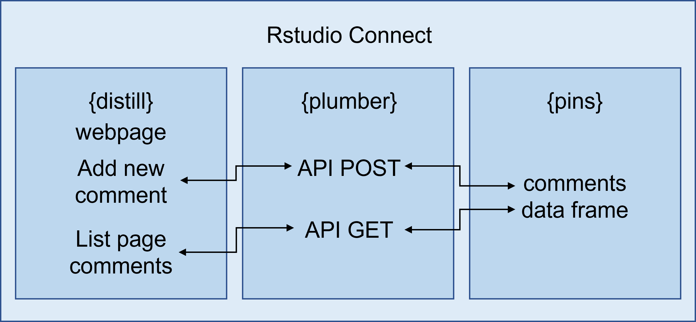
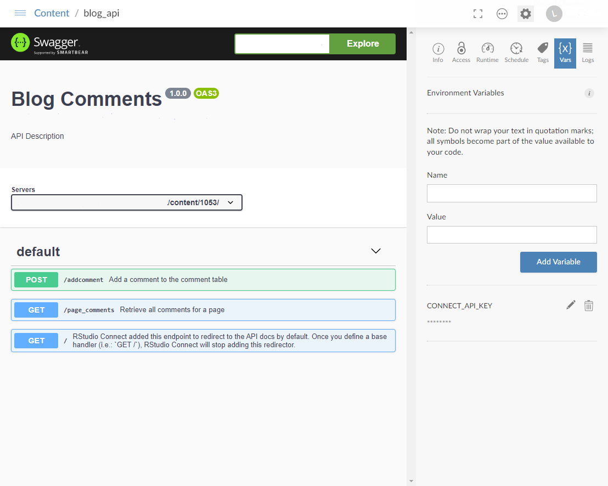
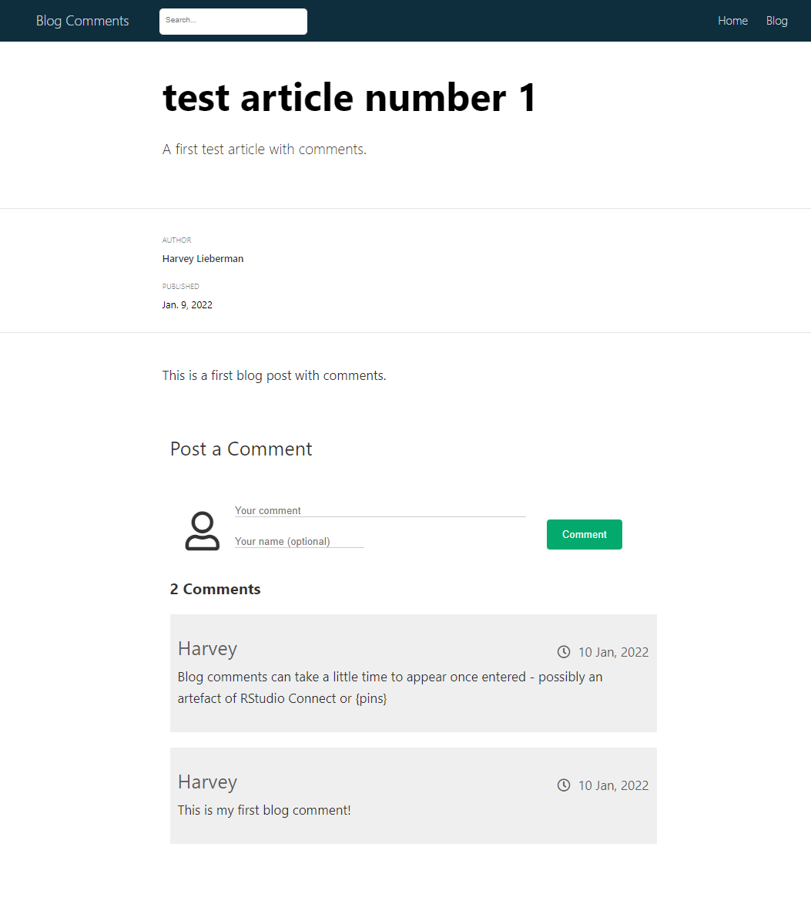
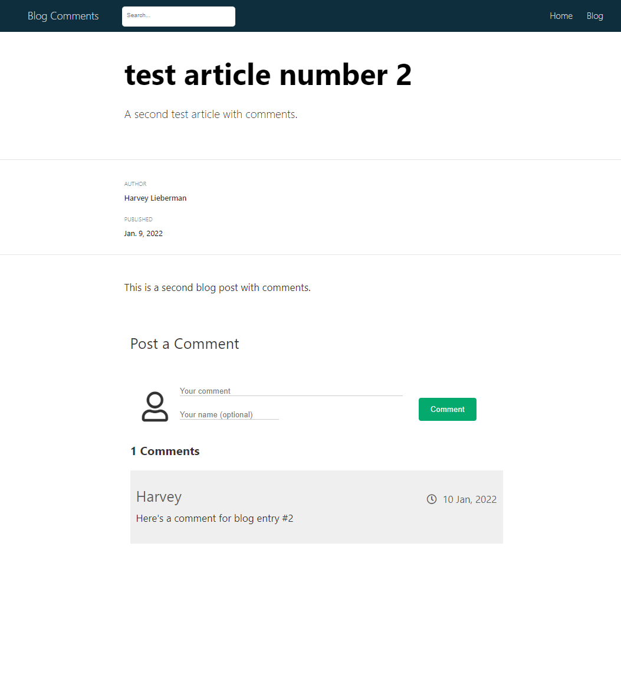

library(htmltools)
comment_form <- function(page_id = 0, site_id = 0) {
comment_html <- paste0('
<div class="comments">
<div class="form-container">
<h3 class="comment-header">Post a Comment</h3>
<form action="<rsconnect URL>/addcomment" id="my-form">
<div class="form-contents">
<span class="comment-pic">
<i class="far fa-user"></i>
</span>
<div class="form-details">
<div class="comment-comments">
<input type="text" id="comment" name="comment" placeholder="Your comment"></textarea>
</div>
<div class="comment-user">
<span class="comment-short">
<input type="text" id="user_name" name="user_name" placeholder="Your name (optional)" />
</span>
</div>
</div>
<input type="hidden" name="site_id" value="', site_id, '" />
<input type="hidden" name="page_id" value="', page_id, '" />
<span class="button-container">
<input type="submit" value="Comment">
</span>
</div>
</form>
</div>
<div id="rtncomments">
</div>
</div>
')
htmltools::HTML(comment_html)
}Following on from a post on including a contact form on a {distill} site hosted on RStudio Connect, here’s a post on how to include comments in blog posts.
Commenting consists of two parts - a way to retrieve comments that belong to a page and a form to enter new comments.
In this implementation I connect a {distill} blog to a {pins} data frame via a {plumber} API. The pinned data frame holds the comments and comments can be added or retrieved through the API. The distill blog posts call javascript functions to post and retrieve comments. The blog, pin board and plumber API all sit on the same RStudio Connect instance.

New Comment Form
The function comment_form takes site_id and page_id arguments and returns an HTML form. site_id is a unique identifier for a website and page_id is a unique identifier for a page on that site.
The form captures a comment and optional user name and passes each of these, along with site_id and page_id to a plumber API. The plumber API updates a pinned data frame with the new comment. In fact, a javascript function intercepts the submit button triggering an update of the page comments after adding the new one. This allows a new comment to be added without having to refresh the page manually.
In addition, the comment_form function adds a div with the id rtncomments which is a placeholder to display comments.
The comment_form R function along with the javascript eventListener are shown below. In the code,
window.addEventListener("load", function() {
document.getElementById("my-form").addEventListener("submit", formsubmit);
async function formsubmit(e) {
e.preventDefault();
// get event-handler element
const form = e.currentTarget;
// get form url
const url = form.action;
// get form data as json string
formdata = new FormData(form);
const plainFormData = Object.fromEntries(formdata.entries());
const jsonFormData = JSON.stringify(plainFormData);
// send request and capture output
out = await fetch(form.action, {
method: 'POST',
body: jsonFormData,
headers: {
"Content-Type": "application/json",
"Accept": "application/json"
}
})
.then(response => response.json());
// update comments
update_comments(plainFormData.page_id, plainFormData.site_id);
};
});Existing Comments
To retrieve existing comments we use a javascript function to build an HTML output. The function takes site_id and page_id arguments and calls a plumber API which returns comments belonging to the page in json form.
Here, site_id and page_id are appended to the url so that we can limit the returning data to a specific page on a specific site. Since we are using fetch, the webpage and API must live on the same RStudio Connect instance.
Once the json-formatted response is returned, the function loops through the comments building an HTML response and updates #rtncomments. If a comment does not have an author it defaults to anonymous user.
function update_comments(page_id, site_id) {
const url = "<rsconnect URL>/page_comments?"
fetch(url + new URLSearchParams({
site: site_id,
page: page_id,
}))
.then(response => response.json())
.then(data => {
// outer_div - placeholder for comments
div_outer = $('<div/>').attr('id', 'div_outer');
// add comments count
div_outer.append('<h3>' + data.length + ' Comments</h3>');
// loop through returned comments, adding each one to an unordered list
ul_list_comments = $('<ul/>', {id: 'list_comments', class: 'comment-list'});
$.each(data, function(i, obj) {
user_name = obj.user_name == "null" ? "anonymous user" : obj.user_name
ul_list_comments.append(
$('<li/>', {class: 'comment-item'}).append([
$('<div/>', {class: 'comment-top'}).append([
$('<h3/>', {class: 'comment-name', text: user_name}),
$('<span/>', {class: 'date-holder'}).append([
$('<i/>', {class: 'far fa-clock'}),
$('<h3/>', {class: 'comment-date', text: obj.date})
])
]),
$('<p/>', {class: 'comment-text', text: obj.comment})
])
);
});
div_outer.append(ul_list_comments);
$("#rtncomments").html(div_outer);
})
.catch((err) => console.log("Can’t access " + url + " response. Blocked by browser?" + err));
};plumber API
The {distill} blog pages are connected to the comments via a plumber API. The API contains two endpoints, a POST endpoint, addcomment which is used to add a new comment and a GET endpoint, page_comments which is used to retrieve comments for a specific page. The comments themselves are stored in a data frame which is accessible via the {pins} package. This allows mutiple sites to use the same data frame.
In the code below, board_register("rsconnect", server = "<rsconnect URL>, account = "<account id>", key = connectAPIKey) registers a pin board which holds a pin called blog_comment_table. Once again,

blog_comment_table is a data frame with columns for site_id, page_id, user_id, date and comment. The date is a timestamp set when the comment is added.
library(plumber)
library(jsonlite)
library(pins)
library(tibble)
library(lubridate)
library(dplyr)
#* @apiTitle Comments
#* Add a comment to the table
#* @param req request body
#* @post /addcomment
function(req) {
## get the message body
body <- jsonlite::fromJSON(req$postBody)
## RSConnect API Key
connectAPIKey <- Sys.getenv("CONNECT_API_KEY")
## register rsconnect pin board
board_register("rsconnect",
server = "<rsconnect URL>,
account = "<account id>",
key = connectAPIKey)
## check for comments table and create if not present
if (nrow(pins::pin_find("blog_comment_table", board = "rsconnect")) == 0) {
comments <- tibble(
site_id = body$site_id,
page_id = body$page_id,
user_id = body$user_id,
date = lubridate::now(),
comment = body$comment
)
} else {
comments <- pins::pin_get(name = "blog_comment_table", board = "rsconnect") %>%
add_row(
site_id = body$site_id,
page_id = body$page_id,
user_id = body$user_id,
date = lubridate::now(),
comment = body$comment
)
}
pins::pin(comments, name = "blog_comment_table", board = "rsconnect")
}
#* Retrieve all comments for a page
#* @param site site id
#* @param page page id
#* @serializer unboxedJSON
#* @get /page_comments
function(site = 0, page = 0) {
## RSConnect API Key
connectAPIKey <- Sys.getenv("CONNECT_API_KEY")
## register rsconnect pin board
board_register("rsconnect",
server = "<rsconnect URL>,
account = "<account id>",
key = connectAPIKey)
## get table and filter
pins::pin_get(name = "blog_comment_table", board = "rsconnect") %>%
dplyr::filter(site_id == site & page_id == page) %>%
dplyr::arrange(desc(date))
}Webpage / Blog Post with Comments
Any page with comments follows the same approach. The page includes the javascript functions listed above (comments.js), some css styling (style.css, see below) and the comment_form function (sourced from comment.R).
There are a few things to note in the code below.
- The two variables,
site_idandpage_id, are needed to identify comments for the webpage. Ideally, we’d define them in the yaml header and use them as parameters in the markdown text. Unfortunately, when usingrender_site, markdown parameters are not rendered (see open GitHub issue).site_idandpage_idare therefore defined within a chunk. - The javascript function
update_commentsdoes not sit in a javascript chunk (you can include javascript in rmarkdown by including a chunk with js instead of r in the chunk header). Instead, the code is placed directly within a<script>tag. When processed this way, we can access variables (site_idandpage_id) stored in r language chunks earlier in the document.
---
title: "test article number 1"
description: |
A first test article with comments.
author:
- name: Harvey Lieberman
date: 01-10-2022
output:
distill::distill_article:
self_contained: false
---
```{r setup, include=FALSE}
knitr::opts_chunk$set(echo = FALSE)
```
```{r}
page_id <- 1
site_id <- 101
source(here::here("comment.R"))
htmltools::includeCSS(here::here("style.css"))
htmltools::includeScript(here::here("comments.js"))
```
This is a first blog post with comments.
```{r}
comment_form(page_id = page_id, site_id = site_id)
```
<script>
update_comments(page_id = `r page_id`, site_id = `r site_id`)
</script>css
The style.css file takes care of styling comments. The file is included below.
.comments {
padding: 20px 10px;
margin: 0;
}
.form-contents {
padding: 10px;
margin: 10px;
display: flex;
flex-direction: row;
align-items: center;
}
.form-details {
display: flex;
flex-direction: column;
flex: 2 1 auto;
}
.form-details input[type=text] {
border-top: 0px;
border-bottom: 1px solid #ccc;
border-left: 0px;
border-right: 0px;
outline: 0px;
padding: 0;
margin-top: 20px;
margin-left: 20px;
font-weight: normal;
}
.form-details input[type=text]:focus {
border-color: #04AA6D;
border-width: 2px;
}
.form-contents .comment-pic {
display: flex;
font-size: 3em;
align-self: flex-end;
}
.button-container {
display: flex;
align-self: flex-end;
}
.comment-comments input[type=text]{
width: 90%;
}
.comment-short {
width: 50%;
}
.comment-short input[type=text]{
width: 80%;
}
.comment-user {
display: flex;
flex-direction: row;
}
.form-container input[type=submit] {
background-color: #04AA6D;
color: white;
padding: 12px 20px;
border: none;
border-radius: 4px;
cursor: pointer;
}
.button-container input[type=submit] {
margin: 2px 5px;
float: right;
}
.form-container input[type=submit]:hover {
background-color: #45a049;
}
.comment-header {
font-size: 1.5em;
line-height: 1.5em;
font-weight: 400;
}
.comment-holder {
margin-top: 50px;
}
ul.comment-list {
list-style: none;
position: relative;
padding: 0;
}
li.comment-item {
padding: 20px 10px;
margin: 20px 0;
position: relative;
width: 100%;
background-color: #efefef;
}
.comment-top {
display: flex;
flex-direction: row;
justify-content: space-between;
}
.comment-name {
font-size: 1.5em;
font-weight: 400;
margin: 5px 0;
color: #5d5d5d;
align-self: flex-start;
}
.date-holder {
color: #5d5d5d;
align-self: flex-end;
display: inline-flex;
align-items: baseline;
}
.comment-date {
font-size: 1em;
font-weight: 400;
margin: 5px 0 5px 10px;
}
.comment-text {
display: block;
margin: 0 0 10px 0;
}Output
After adding a couple of sample blog posts and a few comments the output is shown below. Here, I’ve added two comments to the first blog post and one to the second. The data frame retrieved from {pins} appears as follows:
| site_id | page_id | user_name | date | comment |
|---|---|---|---|---|
| <chr> | <chr> | <chr> | <dttm> | <chr> |
| 101 | 1 | Harvey | 2022-01-10 22:24:00 | This is my first blog comment! |
| 101 | 1 | Harvey | 2022-01-10 22:24:34 | Blog comments can take a little time to appear once entered - possibly an artefact of RStudio Connect or {pins} |
| 101 | 2 | Harvey | 2022-01-10 22:25:17 | Here’s a comment for blog entry #2 |


Issues to Resolve
The refresh process is a little slow, sometimes taking a several seconds to load comments. At this point I’m not sure if it is related to the use of fetch or plumber.
This is a first proof-of-concept and certainly requires some more work but the principle works well.